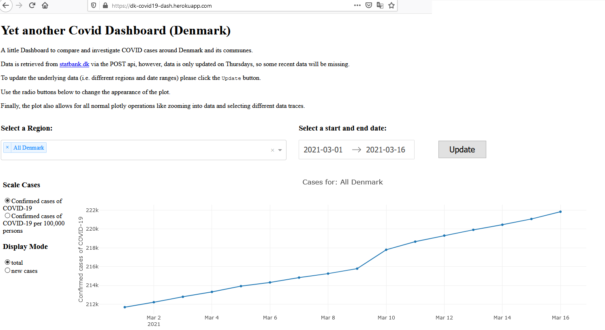

The website presented here is currently not working - statsbank changed the API and I think my heroku has expired…
TL;DR
I created a small dashboard for COVID-19 cases in Denmark, deployed on heroku.
Which you can see here
Background
To motivate myself to learn a few new skills which might come handy in future jobs, I got a few courses on udemy as a general guidance and more structured approach to get into new topics.
One of the courses was on designing interactive dashboards in Pythons using plotly and dash. As a code-along capstone they showed how to develop a dashboard for the stock-market. Now, I could not easily get the data I wanted through pandas-datareader, as many of the APIs now require a registration or are paid.
The Data
As I was anyways up for a bit more of a challenge and recently moved to Denmark and was digging regularly digging through COVID-19 Dashboards (like the one at zeit.de), I gave myself a try.
Fortunately, Denmark provides regularly updated data on COVID-19 (and many many other topics) at statbank.dk all accessible via a POST API.
While the data was easy accessible and could be directly read into pandas as a .csv, it actually had internally some interesting challenges. For example, querying dates that were not present in the database led to errors, so that I had to retrieve meta-data about the database before creating queries, so that I could filter data beforehand.
The Dashboard
The Dashboard itself is a basic line-plot (or a collection of line-plots). To keep the traffic as low as possible, I decided, to leave the update button from the code-along capstone next to the date-range picker and the selection of communes in Denmark. In fact, clicking update requests the data and downloads it into the html file.
I here decided to store the data as an invisible json in the page itself, which was provided as a possible solution in the dash-documentation.
This ways the updates to the plot using the radio-buttons does not need to download new data and can do the computations, without constantly querying the database.

To see the dashboards source code please visit: https://github.com/SRSteinkamp/DK_Covid19_Dash